Refik Anadol
Media Art / AI Data ArtWhy they're established
Turkish-American media artist and pioneer of AI/data art; founder of Refik Anadol Studio (2014), former Google artist-in-residence, and creator of the solo AI installation 'Unsupervised' exhibited at the Museum of Modern Art (MoMA).
Verify · wipo.int · 1 December 2024 ↗“What happens if a machine can dream and, if it can, who defines what is real and what is not?”
— Refik Anadol · wipo.int, 1 December 2024 ↗
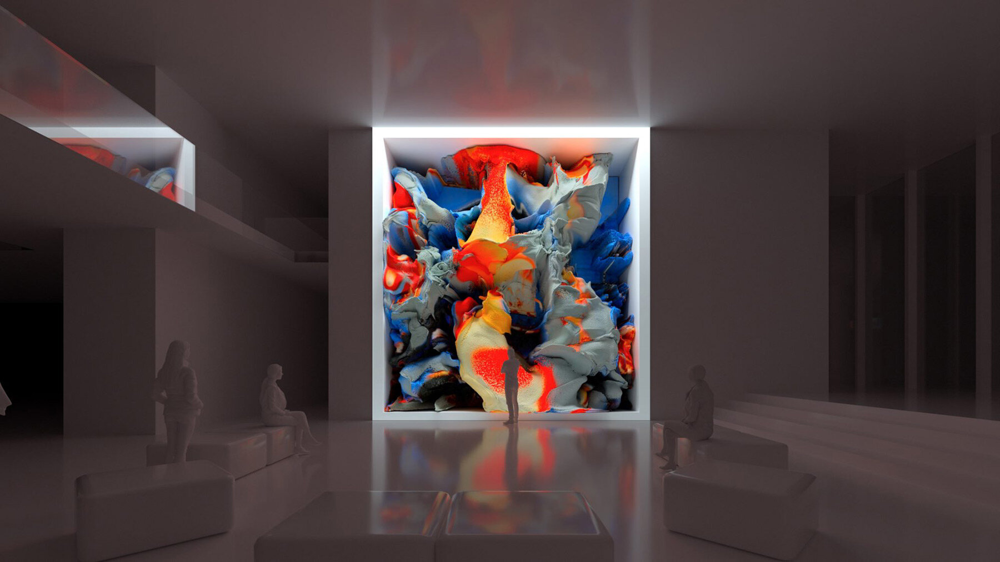
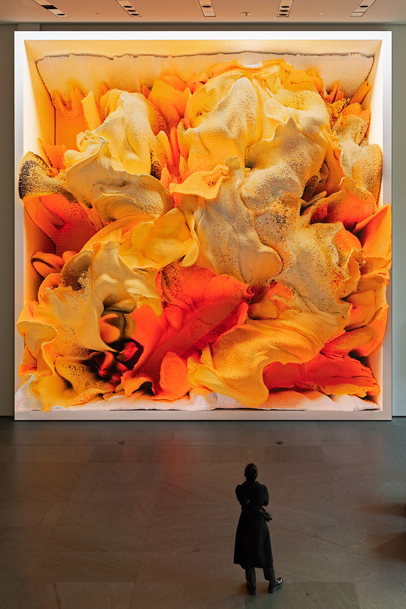
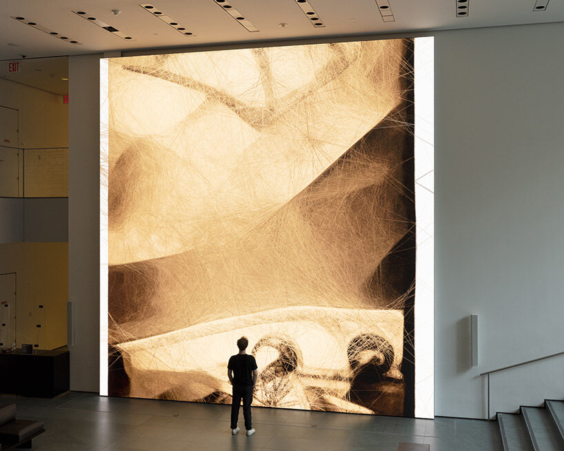
Beeple (Mike Winkelmann)
Digital ArtWhy they're established
Digital artist behind 'Everydays: The First 5000 Days,' which sold at Christie's for $69.3 million in 2021; one of the most-followed digital artists working today. His 'Diffuse Control' is a genuine generative-AI installation (The Shed, then LACMA).
Verify · en.wikipedia.org · reference ↗“For those who have not checked it out yet @midjourney is pretty insane. Gonna be really interesting to see how these amazing new AI tools affect art moving forward when you can literally just type a few words and make something.”
— Beeple · x.com, 28 May 2022 ↗


Paul Trillo
Film / Motion DirectionWhy they're established
Award-winning director and visual artist whom OpenAI commissioned to create the first official Sora-generated music video (Washed Out's 'The Hardest Part'); a longtime experimental filmmaker known for inventive camera techniques.
Verify · forbes.com · 7 May 2024 ↗“What is unique about AI is that it's this more fluid, organic process where you're ideating... That's what's been really exciting for me: you can actually spend more time trying to craft that story.”
— Paul Trillo · forbes.com, 7 May 2024 ↗
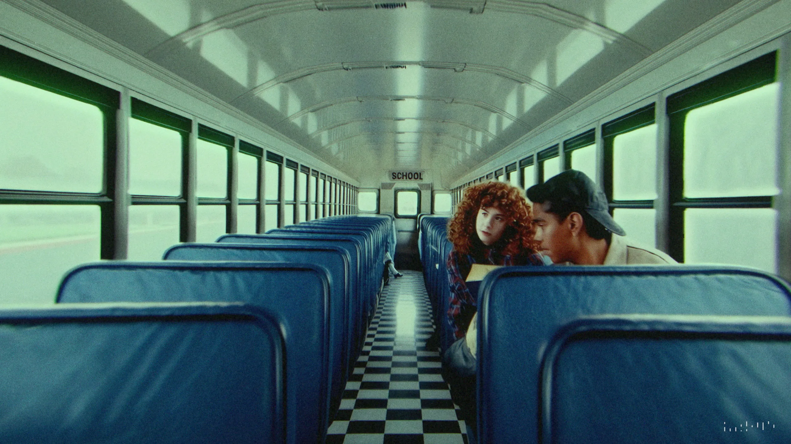
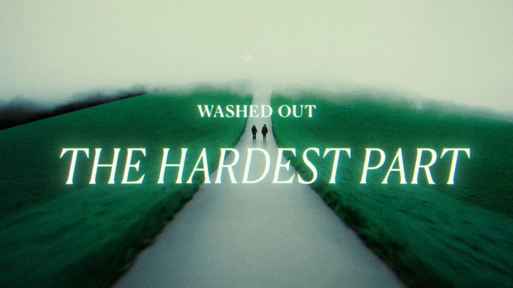
Bradley G. Munkowitz (GMUNK)
Motion Graphics / Design DirectionWhy they're established
American motion-graphics design director and artist with 20+ years in the field; led the team that designed the holographic screen-graphics/UI for the sci-fi feature Tron: Legacy.
Verify · cgchannel.com · November 2011 ↗“Until about a year ago, there was one way to achieve these types of effects. Now with AI and the power of the Z8 Fury, there are ten ways to do it, and the results are all incredible.”
— Bradley G. Munkowitz · thisiscolossal.com, 4 March 2024 ↗

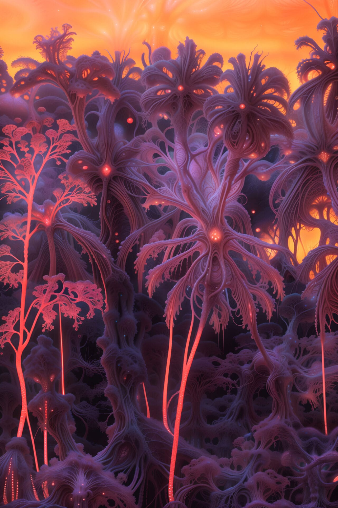
Chad Nelson
Creative Direction / FilmWhy they're established
Award-winning creative director with ~25 years of experience, now a Creative Specialist at OpenAI; directed the short film 'Critterz,' whose characters were designed with DALL-E and then animated.
Verify · c21media.net · 18 October 2024 ↗“I was truly floored. I wouldn't say it was the greatest monster design I've ever seen. But what it did do is it captured wonder.”
— Chad Nelson · zackarnold.com, 27 February 2024 (approx.) ↗
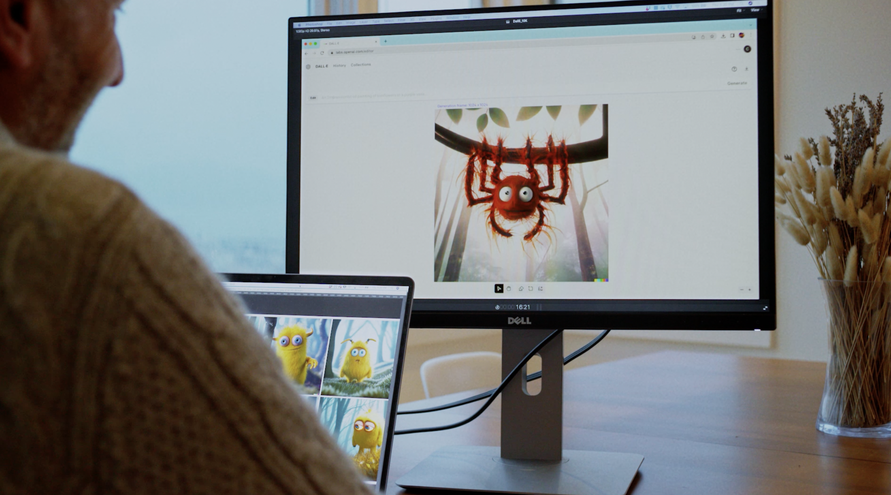
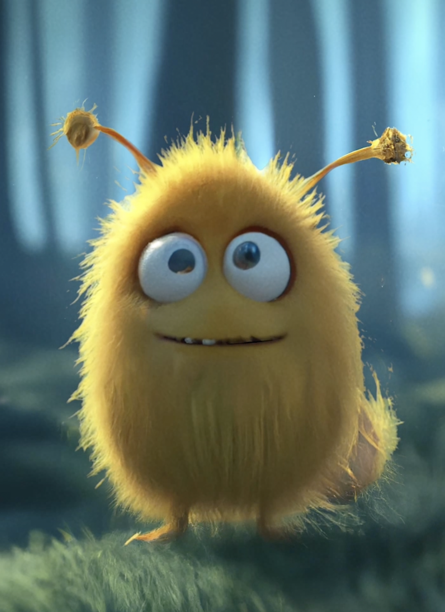
Karen X. Cheng
Creative Direction / Viral AI CampaignsWhy they're established
Director and creative known for viral generative-AI creative campaigns; advisor to Runway, collaborator with Adobe Firefly, and a featured creator in NVIDIA's 'In the NVIDIA Studio' series.
Verify · blogs.nvidia.com · 10 May 2022 ↗“I never had much drawing skill before, so I feel like I have art superpowers. Human plus AI is going to be better than AI alone for a very, very, very long time.”
— Karen X. Cheng · blogs.nvidia.com, 10 May 2022 ↗


Aurore Lechien
Brand / Art DirectionWhy they're established
Design Director at Base Design (Brussels), an internationally recognized branding studio; provided creative direction on the AI-assisted La Monnaie opera 2023-24 season campaign.
Verify · itsnicethat.com · 18 September 2023 ↗“It was so fun. We just had fun for hours.”
— Aurore Lechien · itsnicethat.com, 15 November 2023 ↗

Jessica Walsh
Brand / AgencyWhy they're established
Founder and creative director of the New York agency &Walsh (clients include Barneys, Snapchat, Levi's); previously partner at Sagmeister & Walsh; founder of the mentorship nonprofit Ladies, Wine & Design. Her studio rebranded nuclear-advocacy project Isodope using DALL-E.
Verify · en.wikipedia.org · reference ↗“AI is already here, and it will continue to have an exponentially large presence in the creative world. We can choose to ignore it and become outdated by it. Or we can choose to find creative ways to work with it and push our work further into territories that we couldn't have before.”
— Jessica Walsh · creativeboom.com, 6 October 2022 ↗

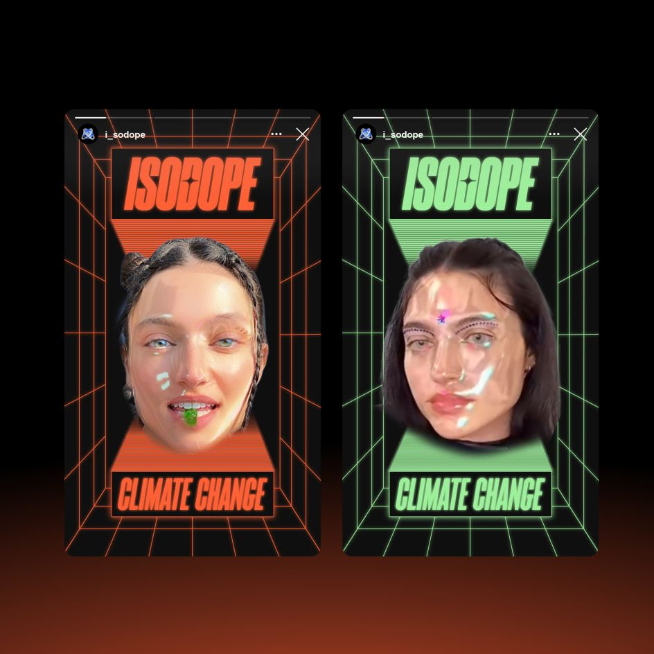
Pum Lefebure
Creative Direction / AdvertisingWhy they're established
Co-founder and Chief Creative Officer of Washington, D.C. agency Design Army (clients include Adobe, Disney, Netflix, Bloomingdale's, PepsiCo); her studio produced the fully AI-generated 'Adventures in A-Eye' campaign for Georgetown Optician using Midjourney.
Verify · commarts.com · 26 April 2023 ↗“I love that this is a new beginning of creative possibilities! And I'm proud that - in working with AI - we never lost our sense of creativity and craft. We didn't let AI control us.”
— Pum Lefebure · invisionmag.com, March 2023 ↗
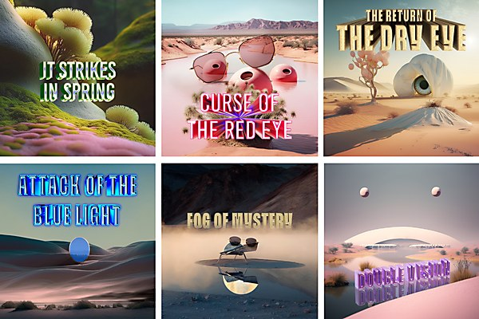
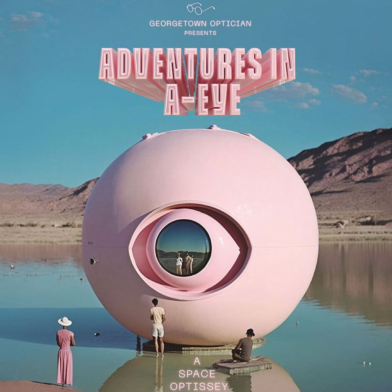
Christoph Niemann
Editorial IllustrationWhy they're established
Internationally renowned illustrator and graphic/editorial designer; creator of more than two dozen New Yorker covers, longtime New York Times Magazine contributor, and subject of an episode of Netflix's 'Abstract: The Art of Design'.
Verify · en.wikipedia.org · reference ↗“When I first learned about computer tools in art school, I was elated. Despite my wariness of AI, I've found some good uses for it.”
— Christoph Niemann · kottke.org, 25 June 2025 ↗
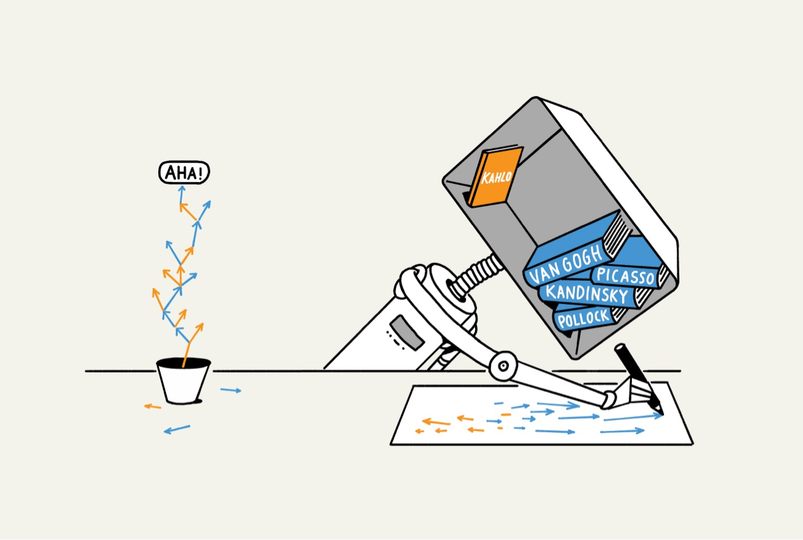
Sougwen Chung
AI / Robotic ArtWhy they're established
Chinese-Canadian pioneer of human-machine collaborative art who paints alongside AI-trained robotic arms (the D.O.U.G. project); a 2019 TED speaker whose robotic-drawing work was acquired by London's Victoria & Albert Museum (2022), and who was named to the 2023 TIME100 AI list, with international exhibitions from the Vancouver Art Gallery to the ArtScience Museum, Singapore.
Verify · en.wikipedia.org · reference ↗“My goal isn't to replace traditional methods but to deepen and expand them, allowing art to arise from a genuine meeting of human and machine perspectives.”
— Sougwen Chung · technologyreview.com, 17 February 2025 ↗
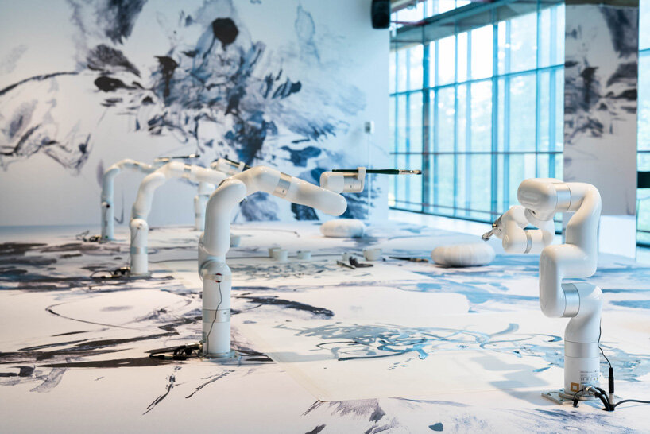
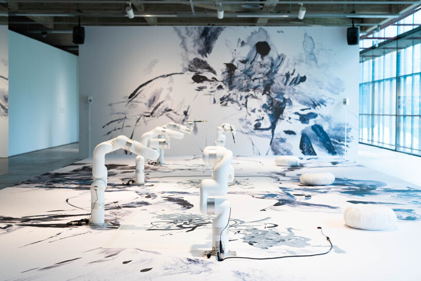
Mario Klingemann
AI / GAN ArtWhy they're established
German artist and pioneer of neural-network (GAN) art, a Google Arts & Culture resident (2016-2018) and 2018 Lumen Prize Gold winner; his GAN installation 'Memories of Passersby I' became the first AI artwork auctioned at Sotheby's in 2019.
Verify · en.wikipedia.org · reference ↗“I use AI as a tool and the works that I make with this tool are mine and not a collaboration, in the same way I would not call a hammer or a piano a 'collaborator'.”
— Mario Klingemann · sothebys.com, 25 February 2019 ↗
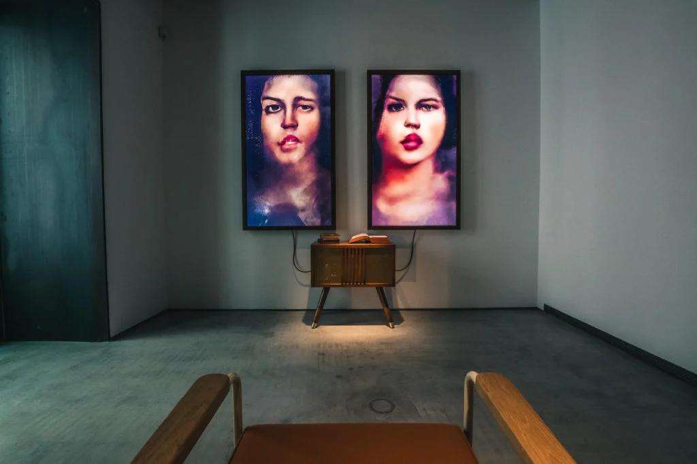
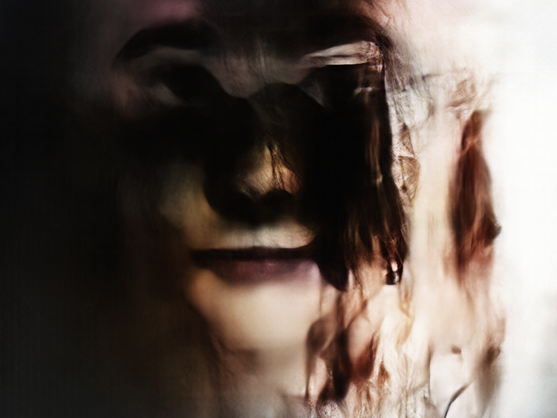
Sofia Crespo
Generative AI / Bio-ArtWhy they're established
Argentine generative-AI artist based in Lisbon working at the intersection of neural networks and biology ('Neural Zoo', 'Artificial Remnants'); she and Anna Ridler were named Artist of the Year at the 2025 Arab Bank Switzerland Digital Art Prize for their career-long impact on digital art.
Verify · fadmagazine.com · 13 June 2025 ↗“They're immensely impacting it because they're tools that weren't there before, meaning we get to create new things and re-examine what already has been done with new neural eyes.”
— Sofia Crespo · clotmag.com, 16 April 2020 ↗
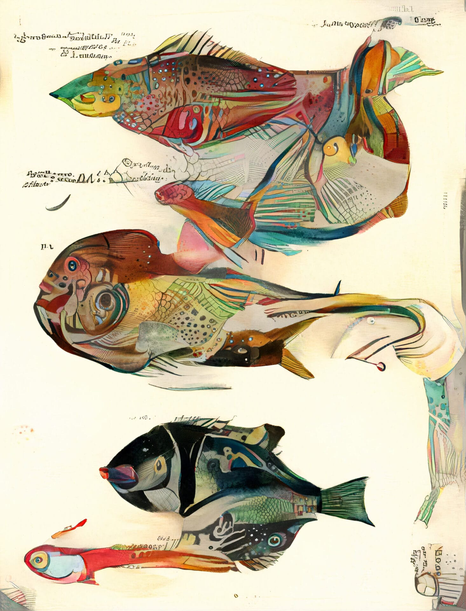
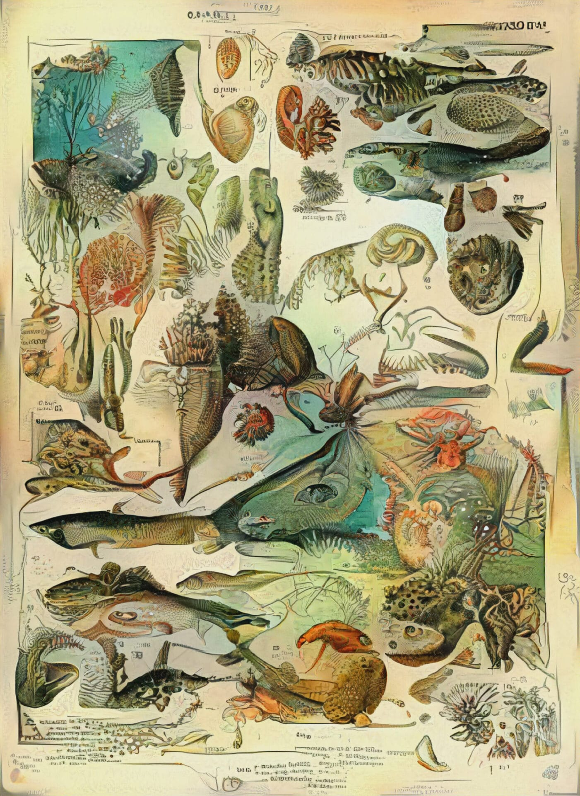
Anna Ridler
GAN / Dataset ArtWhy they're established
British artist working with datasets and machine learning whose work is held in the permanent collection of the V&A; she has exhibited at the Barbican ('AI: More Than Human'), Centre Pompidou, ZKM Karlsruhe and Ars Electronica, where her tulip work received an honorary mention and was nominated for the Beazley Designs of the Year.
Verify · en.wikipedia.org · reference ↗“For me it is very much a tool and a process. I don't find it encroaching on human expression, I find it a way of expressing myself more fully, in ways that I was never able to before.”
— Anna Ridler · felixonline.co.uk, 24 May 2019 ↗
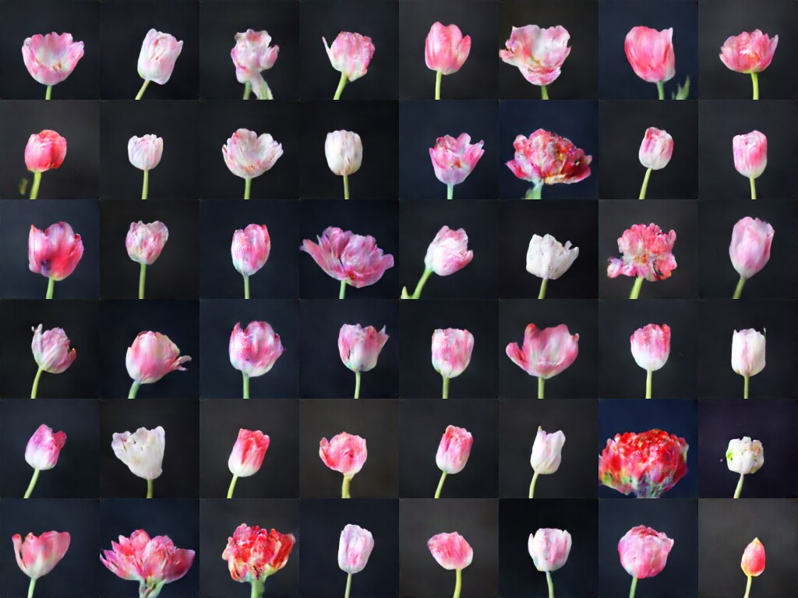
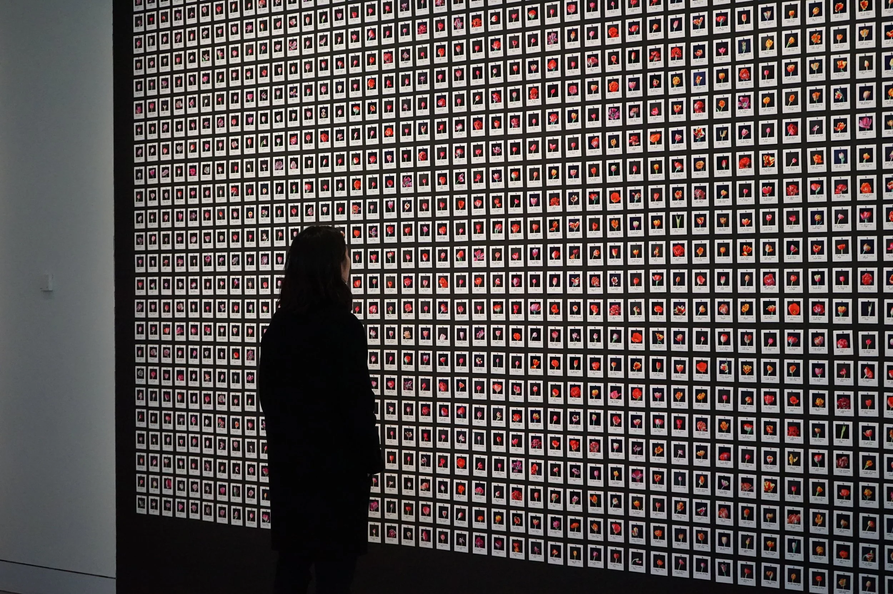
Claire Silver
AI Art (diffusion / mixed media)Why they're established
Prominent AI artist and advocate whose work has entered the permanent collection of the Los Angeles County Museum of Art (LACMA) and has sold at Sotheby's and Christie's; she has exhibited with SuperRare and at Art Basel and is regularly cited as a leading voice of the AI-art movement.
Verify · clairesilver.com · reference ↗“If photography is a camera that reflects reality, AI is a camera that reflects the artist's imagination.”
— Claire Silver · medium.com, 5 June 2023 ↗
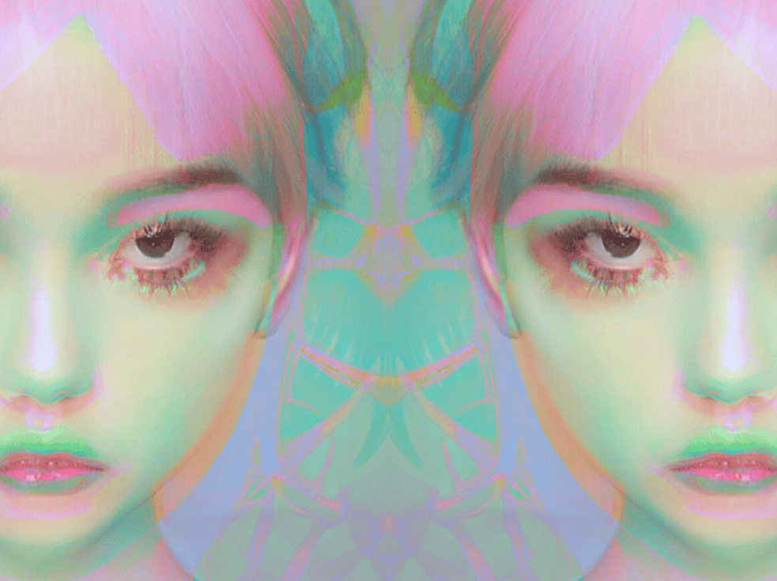

Helena Sarin
GAN / Neural Network ArtWhy they're established
Visual artist and software engineer known as an early GAN artist ('Neural Bricolage'); featured in NVIDIA's GTC AI Art Gallery (2020-2021) and creator of GAN artist books including 'The Book of GANesis,' with her work profiled by AIArtists.org and The Gradient.
Verify · nvidia.com · reference ↗“AI and living inside digital arts feels natural, because I'm very enthusiastic about software.”
— Helena Sarin · aotm.gallery, 19 November 2022 ↗
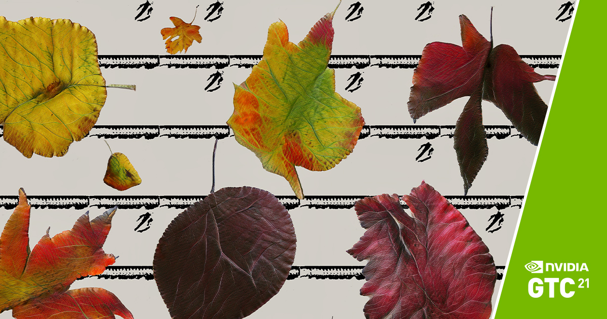
Jason M. Allen
Generative AI Art (Midjourney)Why they're established
Digital artist who won first place in the digital-arts division of the 2022 Colorado State Fair fine-art competition with a Midjourney-generated piece, becoming an internationally covered figure in the AI-art debate.
Verify · smithsonianmag.com · 6 September 2022 ↗“I can now use AI to express these creative ideas and bring my vision into form.”
— Jason M. Allen · museumweek2h1r4.substack.com, 14 February 2023 ↗

Bas Uterwijk
AI Portrait / Post-PhotographyWhy they're established
Dutch digital artist (aka Ganbrood) known for photorealistic AI/GAN reconstructions of historical figures; his work has been featured by My Modern Met, Designboom and Bored Panda, shown in the 'Computational Realism' AI group exhibition (The NFT Gallery, London/New York), and is represented by Kate Vass Galerie.
Verify · mymodernmet.com · 25 August 2021 ↗“Just as photography changed the shape of classical painting, techniques based on artificial intelligence will start influencing and inspiring art and (post-)photography.”
— Bas Uterwijk · mymodernmet.com, 25 August 2021 ↗
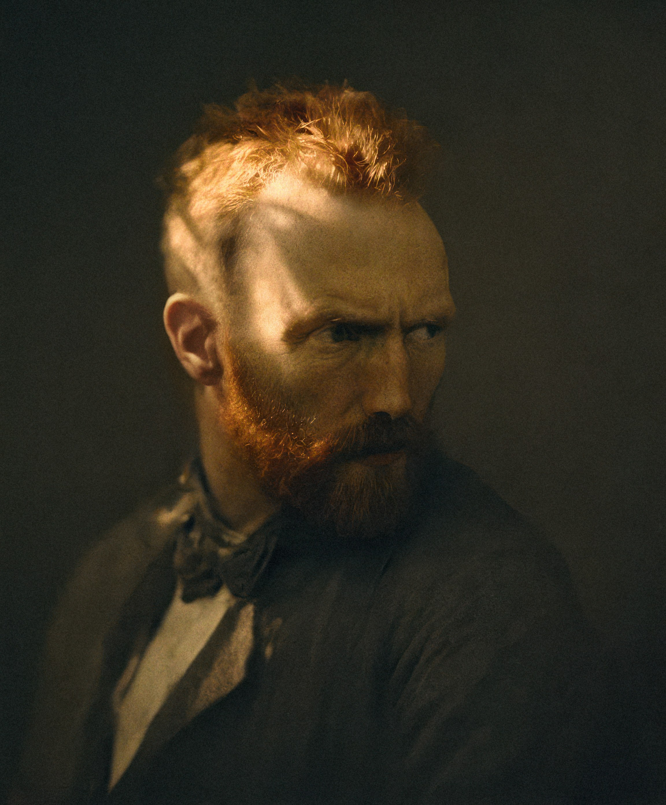
Scott Eaton
AI + Figure DrawingWhy they're established
British-based artist, anatomist and educator who studied figurative drawing/sculpture in Florence and computer graphics at the MIT Media Lab; his solo exhibition 'Artist+AI: Figures & Form in the Age of Intelligent Machines' was staged at Somerset House, London (2019), his ML works have shown at the Vancouver Art Gallery and NVIDIA's AI Art Gallery, and he teaches anatomy to studios including Disney, Pixar and Framestore.
Verify · aiartists.org · reference ↗“In the near-term, AI will give artists amazing new creative capabilities.”
— Scott Eaton · thelondonmagazine.org, 26 June 2019 ↗
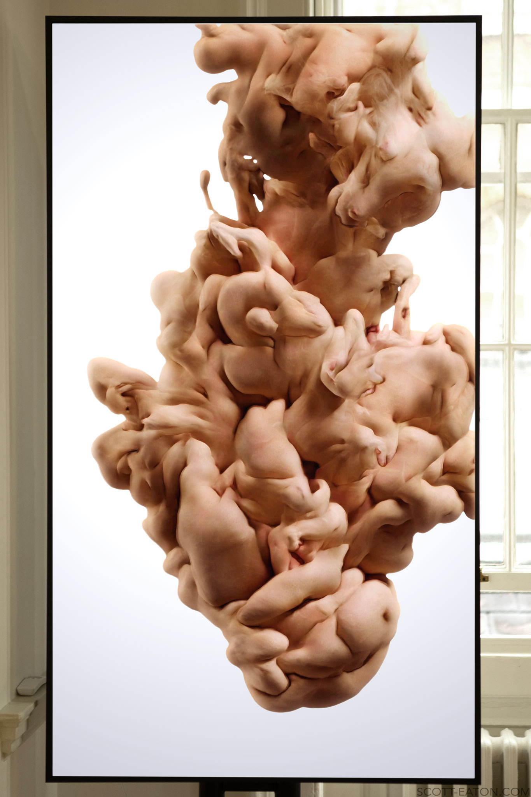
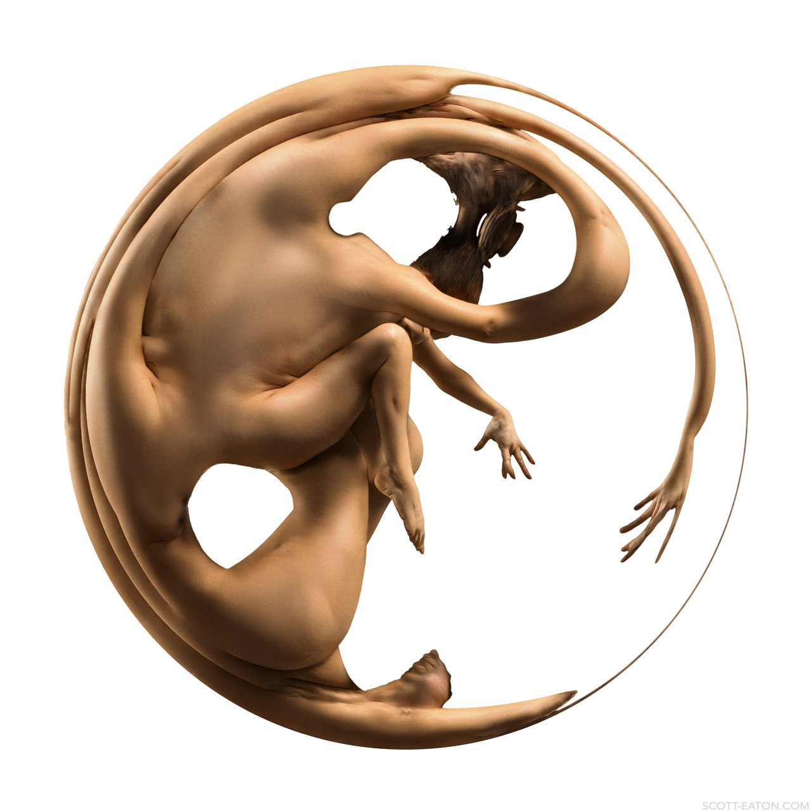
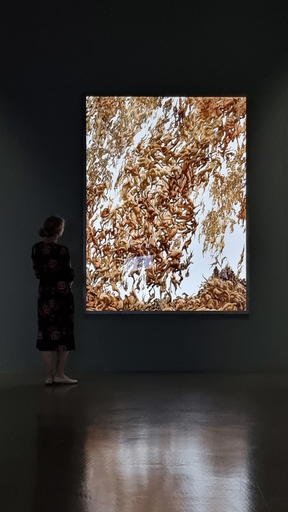
Pindar Van Arman
Robotic AI PaintingWhy they're established
American artist and roboticist who has built AI painting robots ('cloudpainter') for ~15 years; his 'AI Imagined Portrait Painted by a Robot #2' won First Place at Robot Art 2018 and was acquired into the permanent collection of the Los Angeles County Museum of Art (LACMA, 2022), and his practice has been profiled by TIME and NVIDIA's AI Art Gallery.
Verify · vanarman.com · reference ↗“My machines have grown beyond being simple assistants and are now effectively augmenting my own creativity, as well as having creativity of their own.”
— Pindar Van Arman · dallasinnovates.com, 17 March 2023 ↗
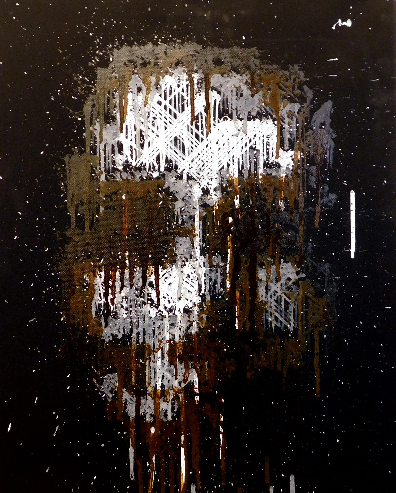
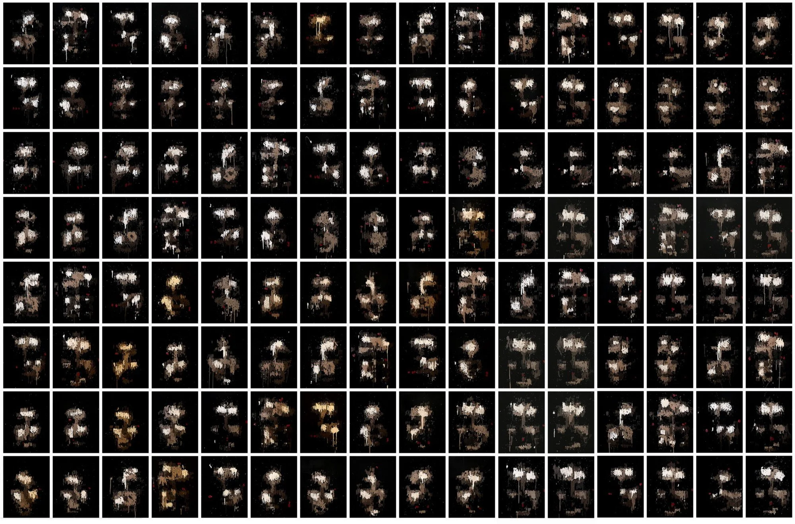
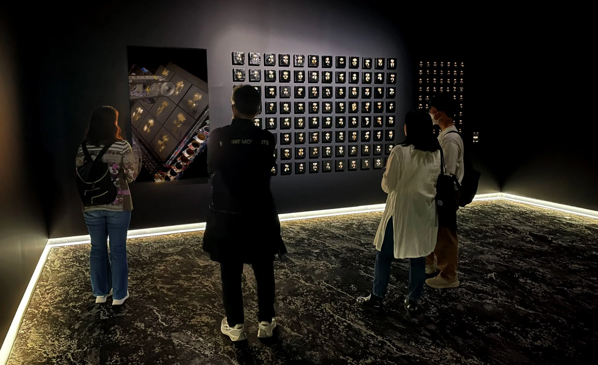